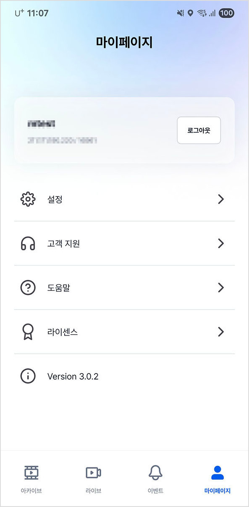
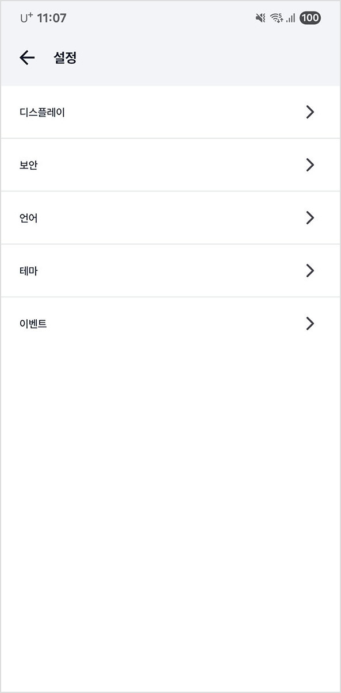
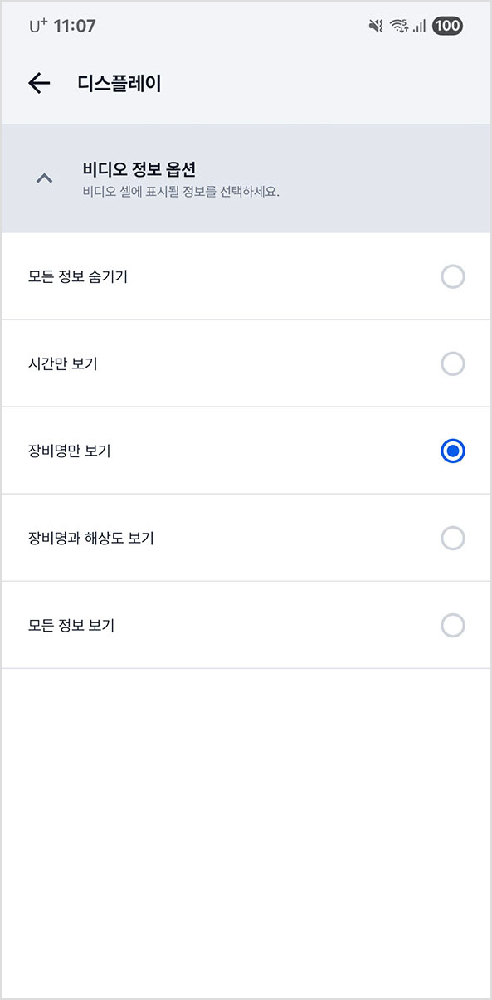
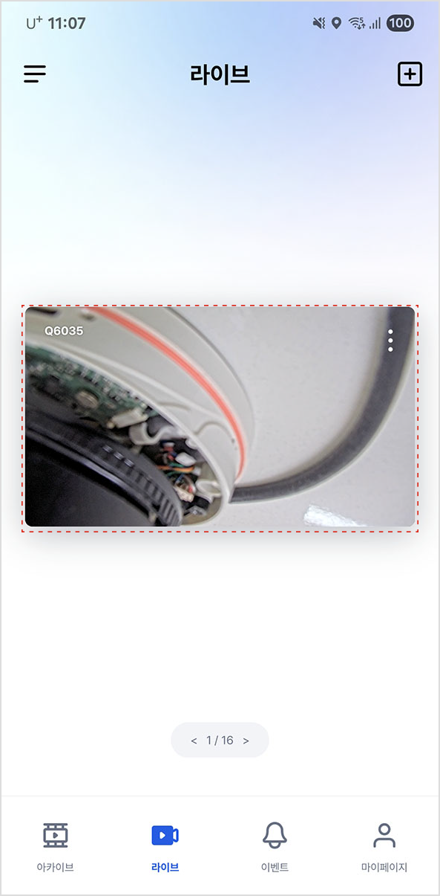
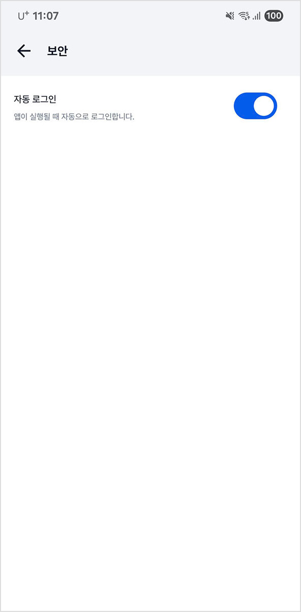
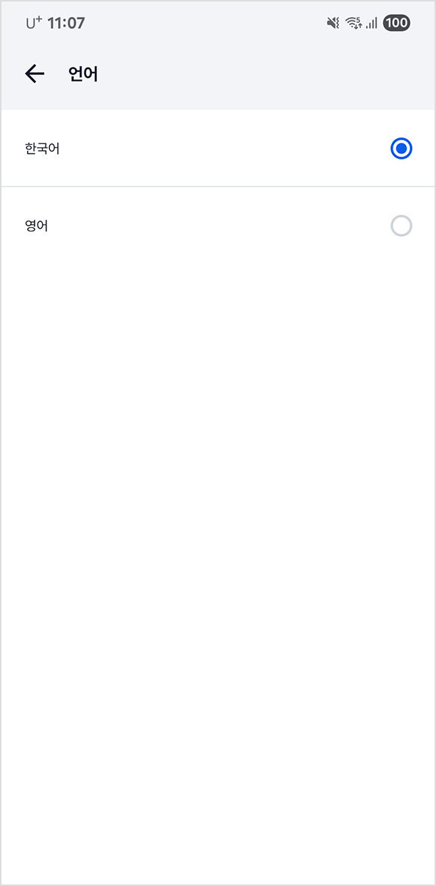
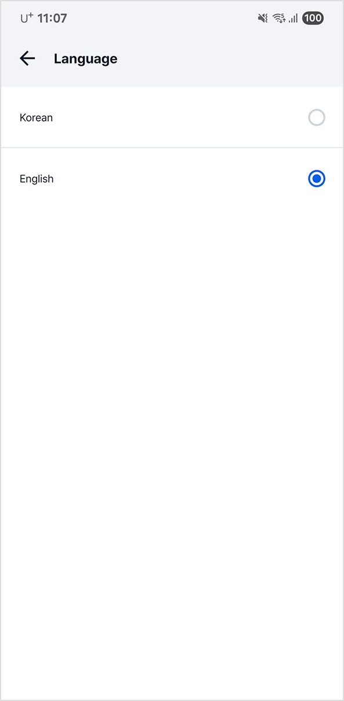
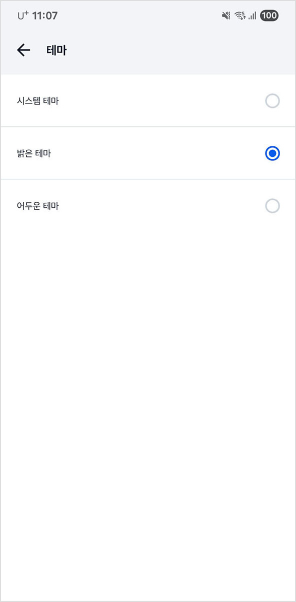
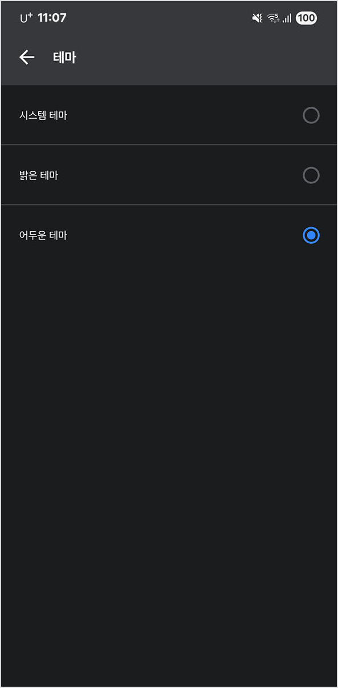
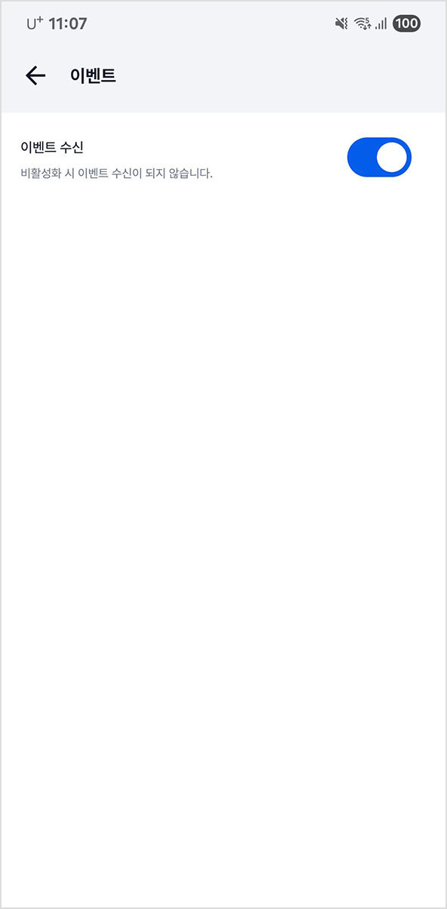

마이 페이지 보기
실제 화면과 설명서 이미지는 다를 수 있습니다.
|
|
 |
|
|
❶ |
❷ |
.png)
1.메인 화면에서 [ ]를 누르세요. 마이 페이지 화면을 표시합니다.
]를 누르세요. 마이 페이지 화면을 표시합니다.
2.원하는 항목을 누르세요.
•[설정]: 앱 설정을 합니다.
•[고객 지원]: 고객 센터를 확인합니다.
•[도움말]: 도움말을 확인합니다.
•[라이센스]: 오픈 소스와 라이선스를 확인합니다.
앱 설정하기
실제 화면과 설명서 이미지는 다를 수 있습니다.
|
 |
||
|
❶ |
❷ |
1.메인 화면에서 [ ] > [설정]을 누르세요. 설정 화면을 표시합니다.
] > [설정]을 누르세요. 설정 화면을 표시합니다.
2.원하는 항목을 누르세요.
•[디스플레이]: 화면을 설정합니다.
•[보안]: 보안을 설정합니다.
•[언어]: 언어를 설정합니다.
•[테마]: 테마를 설정합니다.
•[이벤트]: 이벤트 수신을 설정합니다.
디스플레이
화면을 설정합니다.
화면 표시 정보 설정하기
화면 표시 정보를 설정합니다.
|
 |
 |
|
|
❶ |
❷ |
❸ |
1.메인 화면에서 [ ] > [설정] > [디스플레이]를 누르세요.
] > [설정] > [디스플레이]를 누르세요.
2.원하는 항목을 누르세요.
•[모든 정보 숨기기]: 모든 정보를 화면에 표시하지 않습니다.
•[시간만 보기]: 시간만 화면에 표시합니다.
•[장비명만 보기]: 장비명만 화면에 표시합니다.
•[장비명과 해상도 보기]: 장비명과 해상도를 화면에 표시합니다.
•[모든 정보 보기]: 모든 정보를 화면에 표시합니다.
3.화면에 정보를 표시합니다.
보안
보안을 설정합니다.
자동 로그인 설정하기
자동 로그인을 설정합니다.
|
 |
||
|
❶ |
❷ |
1.메인 화면에서 [ ] > [설정] > [보안]을 누르세요.
] > [설정] > [보안]을 누르세요.
2.[자동 로그인]을 누르세요.
3.앱을 실행할 때 자동으로 로그인합니다.
언어
언어를 설정합니다.
언어 설정하기
한국어, 영어 등 설정합니다.
|
 |
 |
|
|
❶ |
❷ |
❸ |
1.메인 화면에서 [ ] > [설정] > [언어]를 누르세요.
] > [설정] > [언어]를 누르세요.
2.원하는 항목을 누르세요.
3.언어를 설정합니다.
테마
테마를 설정합니다.
테마 설정하기
시스템 테마, 밝은 테마, 어두운 테마 등 설정합니다.
|
 |
 |
|
|
❶ |
❷ |
❸ |
1.메인 화면에서 [ ] > [설정] > [테마]를 누르세요.
] > [설정] > [테마]를 누르세요.
2.원하는 항목을 누르세요.
•[시스템 테마]: 기기 시스템 테마를 적용합니다.
•[밝은 테마]: 밝은 테마를 적용합니다.
•[어두운 테마]: 어두운 테마를 적용합니다.
3.테마를 설정합니다.
이벤트
이벤트 수신을 설정합니다.
이벤트 수신 여부를 설정합니다.
|
 |
|
|
|
❶ |
❷ |
❸ |
.png)
1.메인 화면에서 [ ] > [설정] > [이벤트]를 누르세요.
] > [설정] > [이벤트]를 누르세요.
2.[이벤트 수신]을 누르세요.
3.이벤트 수신을 설정합니다.